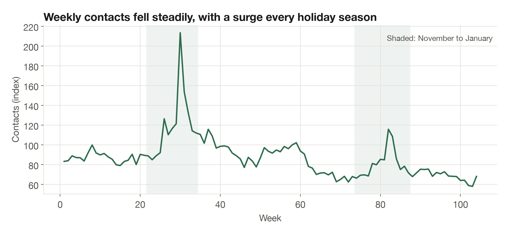
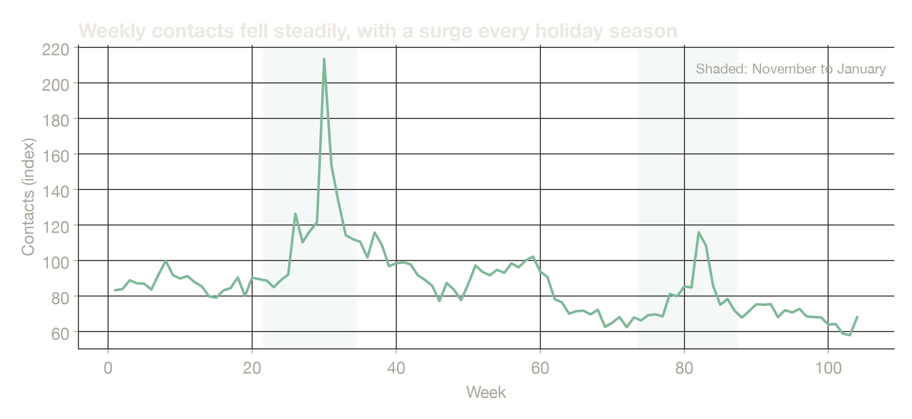
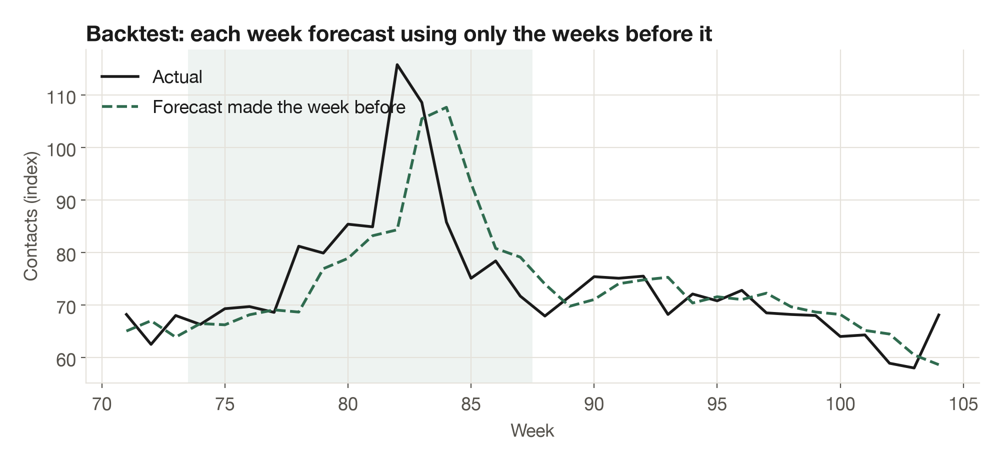
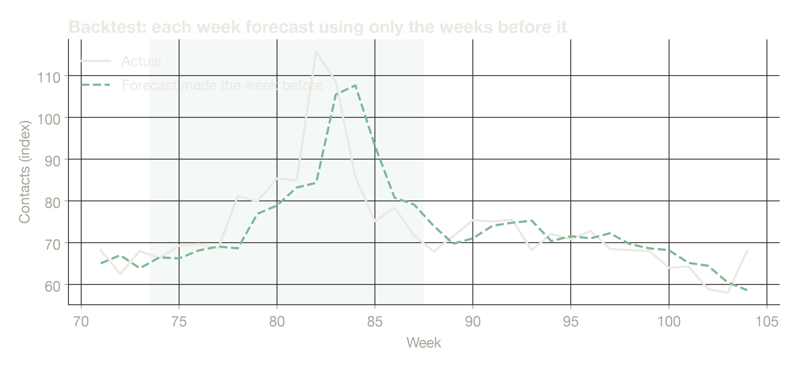

Case study · client details withheld
Planning staff for a support team whose volume was falling.
A consumer retail support team needed a year-ahead contact forecast and a staffing plan. Figures and charts are indexed and altered to protect the client; no real volumes, dates or names are shown.
The problem
Last year's numbers no longer fit.
Weekly contacts had been falling steadily for two years, with a sharp surge every holiday season. Staffing from last year's numbers meant paying for agents the work no longer needed, and still being caught short in December.


At a glance
5 in 6
normal weeks within 10%, one week ahead
About 1 in 3
at eight weeks ahead, so the plan is reissued monthly
2–3×
baseline capacity for the holiday peak
What I did
Measure first, then forecast.
Checked the data before trusting it
Two-plus years of weekly counts, checked for gaps and for channels adding up to totals. One feed started partway through, so it was treated as a break, not as growth.
Chose the model by backtest only
Several methods, from a naive forecast to Holt-Winters, each refit every week and scored only on weeks it had not seen, from many starting points. Damped Holt was chosen.
Tested a tempting shortcut and dropped it
Using sales as a predictor looked better on past data but made forecasts for unseen weeks noticeably worse.
Gave ranges, not one line
Simulated paths give an 80% range for every week, plus a flex level to hold in reserve for events.
Turned contacts into agents
Every forecast week became a number of agents. The holiday peak needs about twice the agents of an average week, planned as a flexible pool.
Results
Including the limits.




- One week ahead, the forecast was within 10% in about five of every six normal weeks. Eight weeks ahead, about one in three.
- For the full year, the total landed within a wide band across test starting points. The year figure is for budgeting, not for rostering.
- Holiday weeks are the hardest to call, so the plan keeps a range of 2 to 3 times baseline with flexible capacity rather than a single number.